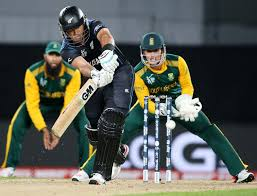

Hobbies
-

Swimming
Swimming is considered to be a healthy form of exercise, an excellent way to stay fit, and a great hobby for people from all walks of life. It is an ideal activity for people of all ages, from young children to older adults, and you can start swimming at any age.
-
Chess
Chess can be different things to different people. One of those things is a fun hobby. So yes, chess is a hobby which teaches other skills as well. Many times chess is labeled as a game of the smart people but that is not true, it can be learnt by anyone.
-

Cricket
The reason why cricket is so interesting is plenty. The cricket in the form in which it is played today consists of 3 different game formats. Therefore, it can be played at varying pace depending on the type of game format which you choose. Moreover, it is pretty exciting and thrilling as well as long as the teams have the same kind of skills. Also, since it is an outdoor sport, it can keep players always fit as well. This ensures that it can work as physical exercises as well. So, if you're looking for an outdoor sport to pursue as a hobby, cricket is one of the best options for you. The increasing popularity of cricket all over the world provides you with the opportunity to build a career in the sport as well.